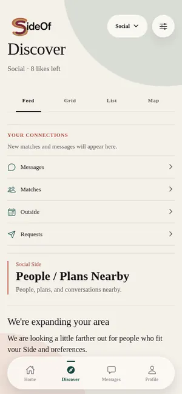

Material Logic Fashion
From an idea, sketch, tech pack, or pattern toward clearer production direction.
In developmentA Washington, DC technology company
We build premium digital products made easier to use, safer to trust, and fairer to access.
Black-founded Washington, DC
Our products
Different products. One standard: useful, thoughtful, and built around the people using them.
Photo, video, and voice in one local-first creative workspace.
Open StudioSocial, Dating, and Private—separate by design, together by choice.
Explore sideof
From an idea, sketch, tech pack, or pattern toward clearer production direction.
In developmentPlan spaces, layouts, walls, and environments before committing them to the real world.
In developmentOur point of view
Price is one barrier. Complexity, privacy, and lack of control are others. Too many products ask people to accept all four before they can do something useful.
LibraSide builds sophisticated software that removes unnecessary friction without lowering the standard.
Power without the unnecessary learning curve.
Privacy and security treated as product design.
Premium capability without punishment pricing.
Your work, data, and choices stay closer to you.
Our story
The products began with problems Kevin Marquis Baker encountered himself: creative tools that were too difficult to use, connection platforms that did not feel safe enough, and digital systems that made everyday work harder than it needed to be.
A wider door
LibraSide is Black-founded and Washington, DC built. The goal is not to make premium technology feel ordinary. It is to make the door into it wider.
Founder
Kevin builds from lived friction first, then turns it into a product people can actually use. That through-line connects every LibraSide product: less complexity, stronger boundaries, fairer access, and more control where it matters.
kevinbaker@librasidetechnologies.comPartnerships, press, grants, and investment